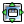
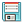

| Using | Features | Links |
Set up and display a histogram of a project property for the selected entries.
To open this panel, click the Histogram button in the Project Plot panel. To hide or show this panel once the plot is created, select the plot in the Project Plot panel and click Hide or Show.
Add using section here
The toolbar provides tools for manipulation of the plot and for saving an image of the plot. The toolbar buttons are described below.
| Reset view
Reset the plot to the original pan and zoom settings. |
|
| Previous view
Display the previous view of the plot in the view history. |
|
| Next view
Display the next view of the plot in the view history. |
|
| Pan and zoom
Pan the plot with the left mouse button, zoom with the right button. |
|
| Zoom to rectangle
Drag out a rectangle on the plot to zoom in to that rectangle. |
|
| Open Project Table
Opens or closes the Project Table panel. |
|
| Pick to include entries
Include entries in the Workspace by picking data points. Clicking on a single point selects the point and deselects all others. Dragging over points selects those points and deselects all others. Shift-clicking adds a single point to the selection. Shift-dragging over points adds the unselected points in the region to the selection. Control-clicking changes the selection of a single point without affecting the selection of other points. Control-dragging over points changes the selection of those points without affecting the selection of other points. |
|
| Pick to select entries
Select entries in the Project Table by selecting data points. This is a useful way of visually selecting entries based on their properties. Clicking on a single point selects the point and deselects all others. Dragging over points selects those points and deselects all others. Shift-clicking adds a single point to the selection. Shift-dragging over points adds the unselected points in the region to the selection. Control-clicking changes the selection of a single point without affecting the selection of other points. Control-dragging over points changes the selection of those points without affecting the selection of other points. |
|
| Label points
Label points with the value of a project property. Clicking the button opens a property selector, in which you can select a property for labeling the points. When you have selected a property, its value is displayed when you pause the pointer over a plot point. If you click on a plot point, it is selected for labeling, and the label is displayed with an arrow pointing to the plot point. Click again in the plot area to fix the position of the label. To delete the label, click on the point again. |
|
|  | Configure plot
Configure the margins and location of the plot image in the plotting area. |
|  | Save plot image
Save an image of the plot to file. Opens a file selector in which you can browse to a location, select the image format, and name the image. |
| Show Controls or Hide
Controls With this button you can hide or show the plot controls. The plot area expands to fill the space left by hiding the controls. |
This area displays the histogram. The horizontal axis gives the property values, the vertical axis gives the counts.
This area of the panel contains controls for each data set, and some controls for the overall plot.
Choose the property to be binned from this option menu, or click Select and choose the property in the property selector that opens.
Choose the color for the histogram bars.
Specify the number of bins to divide the property into. The range of property values observed in the selected entries is divided equally among the bins.
Set the width of the histogram bars in the plot.
Choose a location for the legend from this option menu, or None to hide the legend.
Select this option to add a title to the top of the plot area, and enter the title text in the text box.
Add a data set to the plot. A new tab with the data-related controls is added to the plot controls area. The new data set is displayed in the same plot area.
Delete the data set whose tab is displayed.
Open the Axis Settings dialog box, in which you can make choices for how the axes are displayed.
Save the plot settings as a template. Opens the Save Template dialog box where you can specify a name for the template. Templates are stored in the Maestro user resources directory.